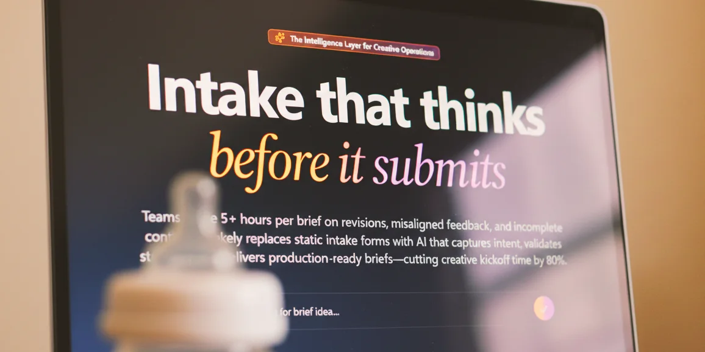

Writing /
Building Intakely, an Intelligence Layer for Creative Teams

Intakely didn’t begin as an app idea. It began as a quiet irritation that followed me from company to company for over a decade.
I’ve spent fifteen years inside creative teams. Agencies, startups, in-house departments, post-acquisition orgs. I’ve led motion projects, built brand systems, shipped campaigns, and scaled creative production inside companies that were growing quickly and expected creative to keep up.
On the surface, the problem always looked like bandwidth or resourcing. But over time I realized something else was happening. The real bottleneck wasn’t execution. It was alignment.
Projects rarely failed because the designers weren’t capable. They failed because they started in ambiguity. A request would arrive with good intentions but incomplete thinking. Constraints were assumed but never articulated. Context was scattered across Slack threads, email chains, and half-written documents. By the time a project officially “started,” the creative team had already spent days simply translating the request into something workable. Forms didn’t solve it, creative briefs still ended in questions and follow up meetings.
That translation cost energy. And energy is finite.
I watched talented people burn out not from too much work, but from unclear work. I’ve felt it myself. I stayed late not because the task was difficult, but because I was trying to reverse-engineer what success was supposed to look like. We were relying on humans to manually structure chaos before they could create anything meaningful.
For years, I accepted that as normal. Then AI arrived in a way that felt different.
The Catalyst: Solving the “Information Scavenger Hunt”
Before Intakely existed, I was experimenting with LLMs daily. I wasn’t just using them to write; I was using them to think.
The pain of a new project wasn’t just that the brief was empty. It was that the information was alive and decaying in ten different places. I’d spend my first four hours on a project playing detective: “We’re doing a rebrand? Why? Who said this direction works? Where is the data from the last campaign?”
I started pasting these “Information Scavenger Hunts” into ChatGPT. I’d feed it a raw, messy Slack thread and ask it to extract the real objectives. I’d drop in three different email chains and ask it to find the contradictions.
I began asking the AI to do what I usually had to do in high-stress kickoff meetings:
- Interrogate the “Why”: Why are we pursuing this specific creative direction? Is there any evidence this works for our audience?
- Surface the Unknowns: What information is missing that will inevitably halt this project in three weeks?
- Bridge the Gap: Translate the vague “vibes” of a stakeholder into a functional requirement.
The insight was immediate. If I could use AI to pressure-test a project’s logic in seconds, why were entire teams spending days doing it by hand?
Around the same time, the tools for building software shifted. Platforms like Replit and Cursor compressed the distance between idea and execution. What used to require a dedicated engineering team could now be prototyped in an evening. GPT wasn’t just answering questions anymore. It was scaffolding code and accelerating iteration.
I didn’t just have an insight into the pain anymore. I had the leverage to build the solution.
The Pivot: V1, Fatherhood, and Ruthless Clarity
The earliest version of Intakely wasn’t what it is today. V1 leaned toward being a project management tool. It had dashboards, status states, and tracking layers. On paper, it made sense. If you’re improving how projects start, why not manage them too?
But as I was building, two things happened that forced a total perspective shift.
First, I realized a deeper truth: Teams don’t want another system to live in. They already have Notion, Asana, Jira, or ClickUp. Replacing them isn’t just a technical challenge; it’s a behavioral one.
Second, my daughter Maya was born.
When Maya arrived, time stopped being abstract. Every hour had weight. Building at night meant less sleep. Iterating in the early morning meant sharper prioritization. There was no longer room for “vanity features” or overbuilt complexity. This constraint improved the product more than any roadmap exercise could have. It forced me to stop chasing noise and focus on the single, highest-value signal: reducing friction before the work begins.
I realized the core insight wasn’t about managing projects better. It was about improving them before they even existed. Intakely stopped trying to be the place where work lived and became the place where thinking happened first.
The Intelligence Engine: How Intakely Works
To solve the “Scavenger Hunt,” I had to build more than a text box. I had to build a system that understands the anatomy of a creative request.
Intakely is an intelligence layer that sits upstream. It intercepts messy input, Slack snippets, voice notes, or half-baked emails , and runs it through a sophisticated reasoning engine before it ever hits your PM tool.
Here is how the system actually handles the complexity:
1. Multi-Channel Intake & Synthesis
The “mess” is rarely in one place. Intakely allows you to pull in context from multiple sources, synthesizing disparate conversations into a single, high-fidelity source of truth. It doesn’t just summarize; it identifies conflicting directives between stakeholders.
2. Strategic Decomposition
When a request like “We need a launch video ASAP” enters the system, Intakely doesn’t treat it as a single task. It deconstructs it into:
- Objective Extraction: Identifying the difference between a “Product Launch” and a “Feature Update.”
- Constraint Mapping: Recognizing that “ASAP” is a risk, not a deadline, and flagging it for resolution.
- Assumption Auditing: Surfacing the “hidden” requirements , like localization or specific aspect ratios , that usually cause late-stage delays.
3. The Interrogation Layer
This is the heart of the product. Based on the initial input, Intakely generates a dynamic, intelligent Q&A session for the stakeholder. It asks the “hard” questions up front: “We’re moving in Direction X, but our last three campaigns in that style underperformed. Are we pivoting for a specific reason?” It forces a level of strategic rigor that usually requires a senior creative director to extract.
4. Downstream Export
Once the request is structured and pressure-tested, Intakely exports that “Engineered Alignment” directly into the tools teams already use, Notion, Asana, or Jira. It doesn’t compete with your workflow; it fuels it.
Protecting the Creative Spark
At its core, Intakely transforms unstructured requests into structured alignment. The difference is subtle but powerful. It doesn’t automate creativity. It protects it.
I’ve spent too long in this industry to want to turn creative work into something mechanical. Intakely isn’t about replacing designers or strategists with AI-generated briefs. It’s about removing the cognitive load that prevents them from doing their best thinking. When context is clear and intent is shared, momentum builds faster and fewer hours are wasted in the “translation” phase.
The irony is that creative teams are often the most thoughtful people in an organization, yet they’re handed the least structured inputs. Intakely exists to rebalance that.
Where We Go From Here
The vision for Intakely isn’t expansion into project management. It is depth in intelligence.
I’m building toward a future of smarter feasibility modeling, workload awareness, and pattern recognition. The goal is to become the intelligence layer that the world’s existing systems quietly rely on. I don’t see this as a productivity play. I see it as a quality-of-work play.
Creative excellence rarely fails at the execution stage. It fails at the expectation stage.
I’m finally building the tool that addresses the friction I’ve felt for fifteen years. It feels personal. But more than that, it feels overdue.